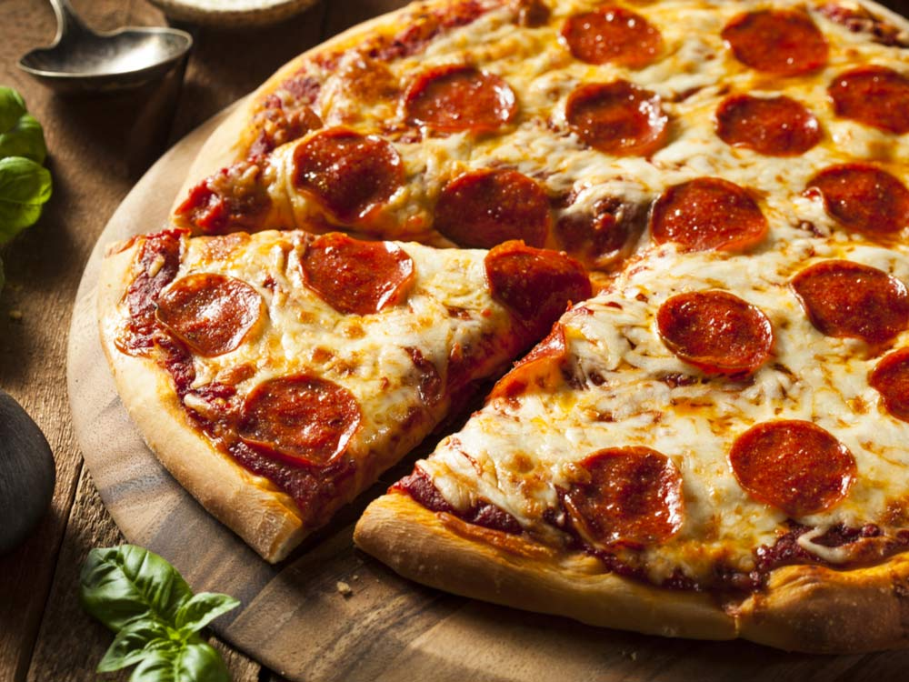

<!--
  Generated template for the PrincipalPage page.

  See http://ionicframework.com/docs/components/#navigation for more info on
  Ionic pages and navigation.
-->
<ion-header>

  <ion-navbar color="{{selectedTheme}}">
    <ion-title text-left>
      
    </ion-title>
    <ion-buttons end>
      <button ion-button (click)="gotoFotoPage()">
        <ion-icon name="camera"></ion-icon>
      </button>
    </ion-buttons>
  </ion-navbar>
</ion-header>


<ion-content>

  <loader *ngIf="loading"></loader>

  <div *ngIf="!loading" class="principal">

    <div class="refeicoes-custom">
        
        <!-- <div class="refeicao">
          
          <h2>Personalizado 1</h2>
        </div>
        <div class="refeicao">
          
          <h2>Da Madruga</h2>
        </div> -->
        <div (click)="openCriarRefeicao()" class="refeicao">
          <ion-icon name="add"></ion-icon>
          
          <h2>Nova refeição</h2>
        </div>
    </div>


    <div class="title">
      <p>Opções padrões</p>
    </div>

    <div class="opcoes" *ngIf="refeicoesPadroes && refeicoesPadroes.length > 0">
      <div class="opcao" *ngFor="let refeicao of refeicoesPadroes; let i = index">
        
        <h2>{{refeicao.ds_refeicao}}</h2>
      </div>
    </div>
  </div>

</ion-content>
